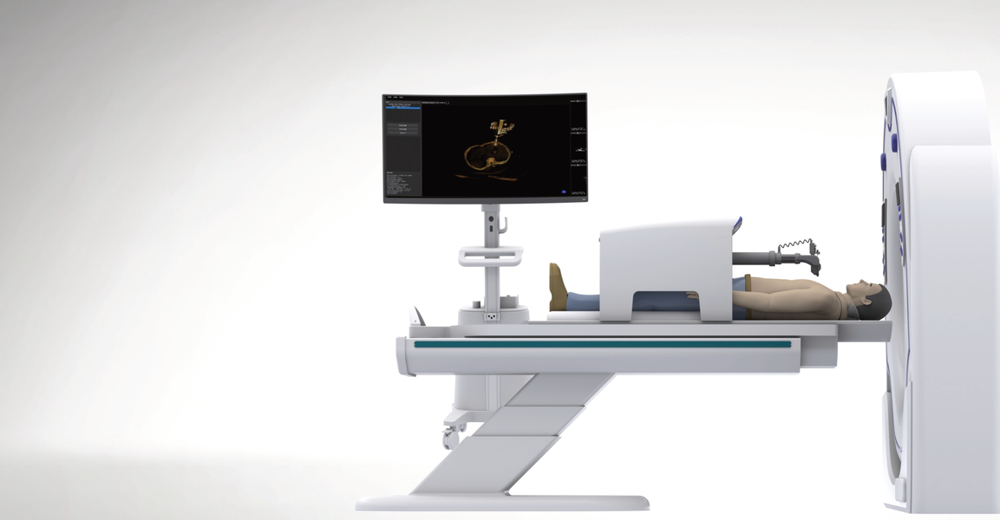

RoboC™ Navigation System delivers sub-millimeter accuracy for CT-guided percutaneous biopsies of the lung, kidney, and liver — automated, intelligent, and designed for the future of minimally invasive surgery.

Abacus Surgical was founded with a singular mission: to empower surgeons with technology that enhances precision, improves patient outcomes, and advances the field of minimally invasive surgery.
Our flagship RoboC™ Navigation System represents years of research, development, and collaboration with leading surgical specialists worldwide — combining robotics, AI, and medical imaging.
Already approved and in clinical use in China, with a clear FDA 510(k) pathway to bring robotic precision to hospitals and surgical centers across the United States and beyond.
A compact robotic platform that integrates with existing CT scanners to automate needle positioning with sub-millimeter precision.
Navigation + Positioning + Automation
| Feature | RoboC™ | Competitors | Traditional Methods |
|---|---|---|---|
| Applicable Sites | Adult Thoracoabdominal Solid Organs | Adult Thoracoabdominal Solid Organs | Adult Thoracoabdominal Solid Organs |
| Function | Navigation + Positioning | Navigation | Navigation + Positioning |
| Consumables | Dedicated Consumables | Third-party & Dedicated | Third-party Consumables |
| Automation Level | Automatic Needle Insertion & Adjustment | — | Manual Needle Insertion & Adjustments |
| Insertion Accuracy | < 2 mm | > 7 mm | > 7 mm / 5-8 mm |
| Surgical Time | < 20 min | 5-30 min | 20-30 min |
| Complications | Minimized | Reduced | Relatively Low / Depends on Experience |
| Radiation Exposure | Minimized | Reduced | Increased |
Data sources: Multi-center clinical research (Weiyin); Publicly available information for traditional methods.
6-axis robotic arm with real-time CT feedback adjusts needle trajectory in real-time, maintaining sub-millimeter accuracy throughout the procedure.
Intelligent software analyzes CT images to identify optimal needle paths, avoiding critical structures and maximizing biopsy yield.
Designed to work with existing CT scanners — no need for expensive new imaging equipment. Quick setup, minimal OR modifications.
Small footprint fits standard CT rooms. Easy to position and reposition between patients without disrupting clinical workflow.
Percutaneous biopsy of pulmonary nodules and masses under CT guidance.
Precise sampling of renal lesions with minimal tissue trauma.
Targeted hepatic lesion biopsy with reduced complication risk.
Join the growing number of hospitals adopting robotic navigation for percutaneous biopsies. Contact us to learn more about RoboC™.
jeremy.woods[at]absurgical.ai
Pleasanton, CA, USA
Approved in China · FDA 510(k) pathway for US market